CHEATING THE GALLOWS.
BY I. ZANGWILL.
ILLUSTRATIONS BY GEO. HUTCHINSON.
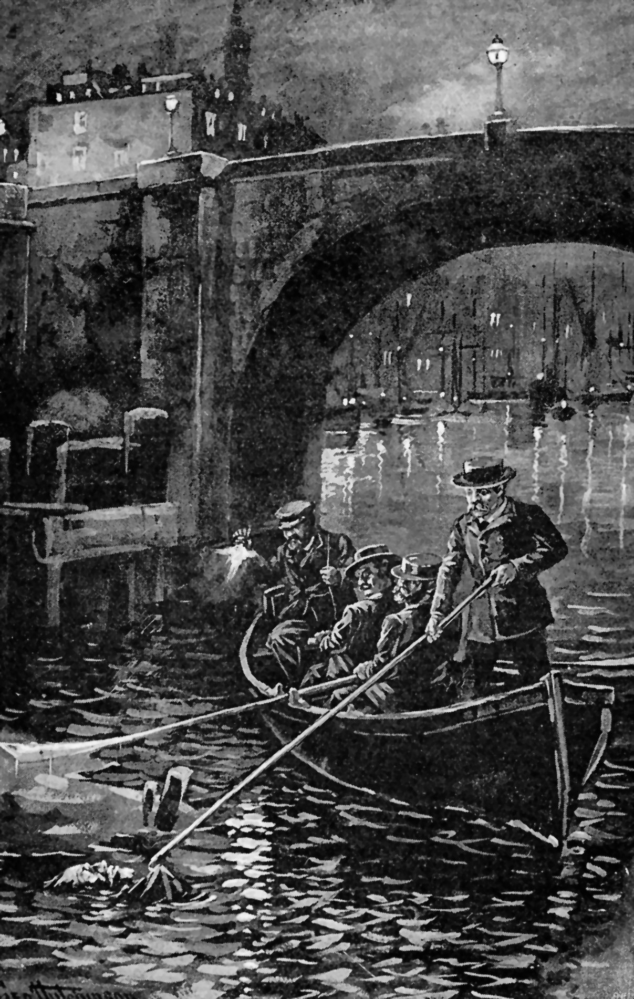
THE CORPSE WASHED UP BY THE RIVER.
{kind=link}
CHAPTER I.
CURIOUS COUPLE.
They say that a union of opposites makes the happiest marriage, and perhaps it is on the same principle that men who chum are always so oddly assorted. You shall find a man of letters sharing diggings with an auctioneer, and a medical student pigging with a stockbroker's clerk. Perhaps each thus escapes the temptation to talk "shop" in his hours of leisure, while he supplements his own experiences of life by his companion's.
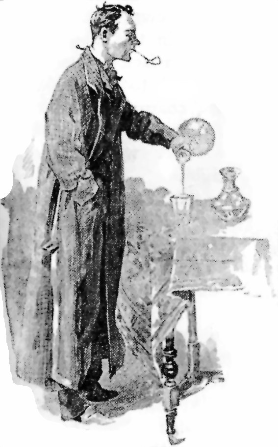
TOM PETERS.
{kind=link}
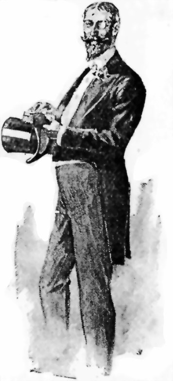
EVERARD G. ROXDAL.
{kind=link}
There could not be an odder couple than Tom Peters and Everard G. Roxdal—the contrast began with their names, and ran through the entire chapter. They had a bedroom and a sitting-room in common, but it would not be easy to find what else. To his landlady, worthy Mrs. Seacon, Tom Peters's profession was a little vague, but everybody knew that Roxdal was the manager of the City and Suburban Bank, and it puzzled her to think why a bank manager should live with such a seedy-looking person, who smoked clay pipes and sipped whiskey and water all the evening when he was at home. For Roxdal was as spruce and erect as his fellow-lodger was round-shouldered and shabby; he never smoked, and he confined himself to a small glass of claret at dinner.
It is possible to live with a man and see very little of him. Where each of the partners lives his own life in his own way, with his own circle of friends and external amusements, days may go by without the men having five minutes together. Perhaps this explains why these partnerships jog along so much more peaceably than marriages, where the chain is drawn so much tighter, and galls the partners rather than links them. Diverse, however, as were the hours and habits of the chums, they often breakfasted together, and they agreed in one thing—they never stayed out at night. For the rest Peters sought his diversions in the company of journalists, and frequented debating rooms, where he propounded the most iconoclastic views; while Roxdal had highly respectable houses open to him in the suburbs, and was, in fact, engaged to be married to Clara Newell, the charming daughter of a retired corn merchant, a widower with no other child.
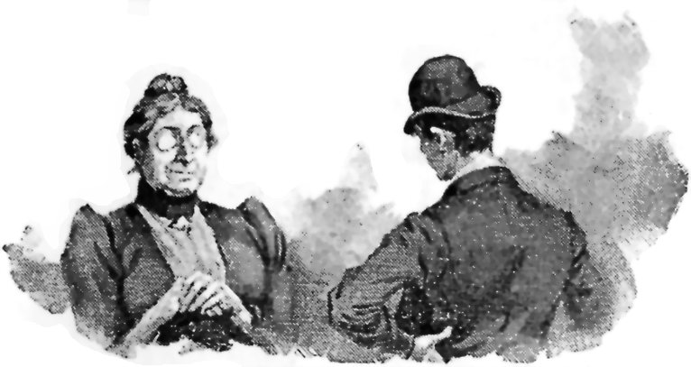
ASKED TWENTY-FIVE PER CENT. MORE.
{kind=link}
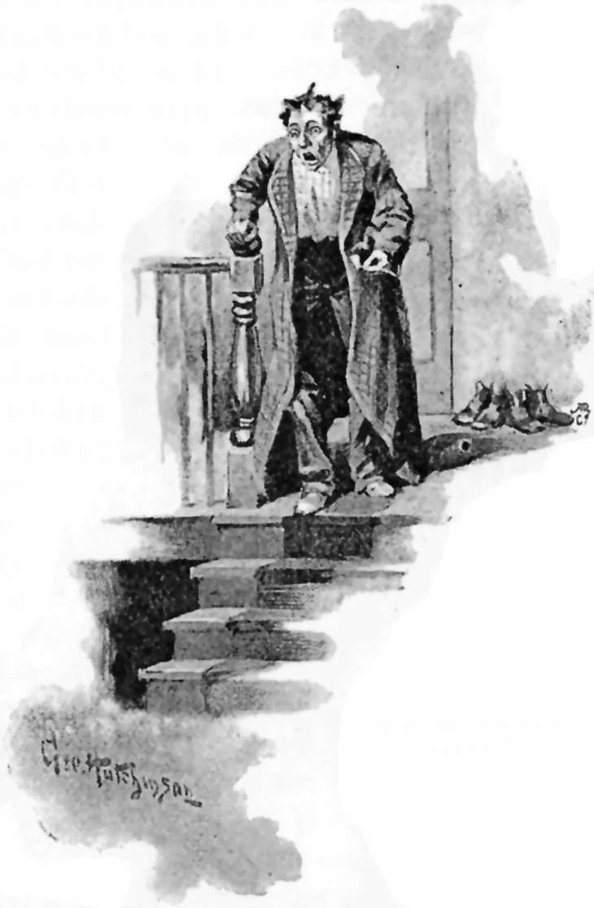
FOR HIS SHAVING WATER.
{kind=link}
Clara naturally took up a good deal of Roxdal's time, and he often dressed to go to the play with her, while Peters stayed at home in a faded dressing-gown and loose slippers. Mrs. Seacon liked to see gentlemen about the house in evening dress, and made comparisons not favourable to Peters. And this in spite of the fact that he gave her infinitely less trouble than the younger man. It was Peters who first took the apartments, and it was characteristic of his easy-going temperament that he was so openly and naïvely delighted with the view of the Thames obtainable from the bedroom window, that Mrs. Seacon was emboldened to ask twenty-five per cent. more than she had intended. She soon returned to her normal terms, however, when his friend Roxdal called the next day to inspect the rooms, and overwhelmed her with a demonstration of their numerous shortcomings. He pointed out that their being on the ground floor was not an advantage, but a disadvantage, since they were nearer the noises of the street—in fact, the house being a corner one, the noises of two streets. Roxdal continued to exhibit the same finicking temperament in the petty details of the ménage. His shirt fronts were never sufficiently starched, nor his boots sufficiently polished. Tom Peters, having no regard for rigid linen, was always good-tempered and satisfied, and never acquired the respect of his landlady. He wore blue check shirts and loose ties even on Sundays. It is true he did net go to church, but slept on till Roxdal returned from morning service, and even then it was difficult to get him out of bed, or to make him hurry up his toilette operations. Often the mid-day meal would be smoking on the table while Peters would smoke in the bed, and Roxdal, with his head thrust through the folding doors that separated the bedroom from the sitting-room, would be adjuring the sluggard to arise and shake off his slumbers, and threatening to sit down without him, lest the dinner be spoilt. In revenge, Tom was usually up first on week-days, sometimes at such unearthly hours that Polly had not yet removed the boots from outside the bedroom door, and would bawl down to the kitchen for his shaving water. For Tom, lazy and indolent as he was, shaved with the unfailing regularity of a man to whom shaving has become an instinct. If he had not kept fairly regular hours, Mrs. Seacon would have set him down as an actor, so clean shaven was he. Roxdal did not shave. He wore a full beard, and, being a fine figure of a man to boot, no uneasy investor could look upon him without being reassured as to the stability of the bank he managed so successfully. And thus the two men lived in an economical comradeship, all the firmer, perhaps, for their mutual incongruities.
CHAPTER II.
A WOMAN'S INSTINCT.
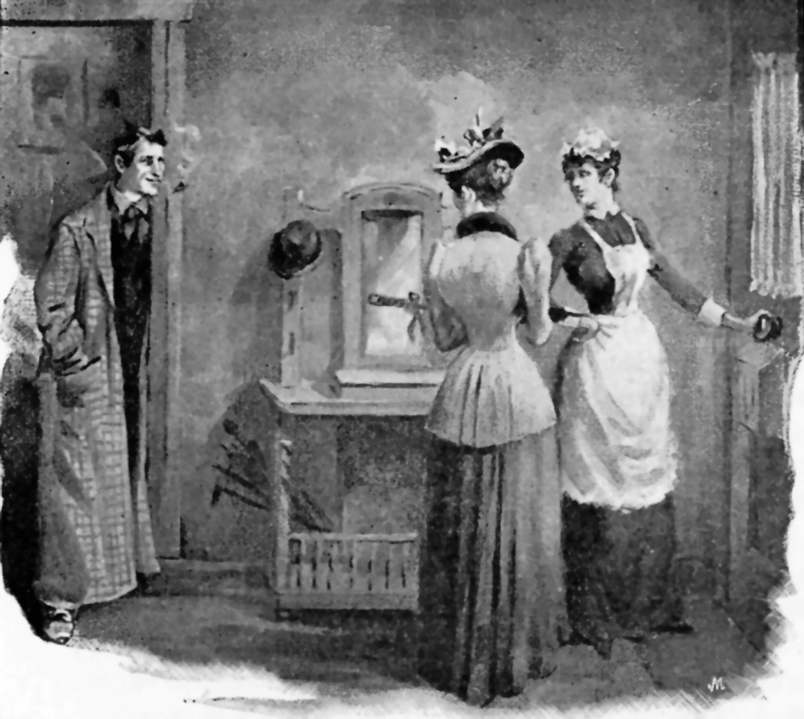
"TOM SHAMBLED FROM THE SITTING-ROOM."
{kind=link}
It was on a Sunday afternoon in the middle of October, ten days after Roxdal had settled in his new rooms, that Clara Newell paid her first visit to him there. She enjoyed a good deal of liberty, and did not mind accepting his invitation to tea. The corn merchant, himself indifferently educated, had an exaggerated sense of the value of culture, and so Clara, who had artistic tastes without much actual talent, had gone in for painting, and might be seen, in pretty toilettes, copying pictures in the Museum. At one time it looked as if she might be reduced to working seriously at her art, for Satan, who finds mischief still for idle hands to do, had persuaded her father to embark the fruits of years of toil in bubble companies. However, things turned out not so bad as they might have been, a little was saved from the wreck, and the appearance of a suitor, in the person of Everard G. Roxdal, ensured her a future of competence, if not of the luxury she had been entitled to expect. She had a good deal of affection for Everard, who was unmistakably a clever man, as well as a good-looking one. The prospect seemed fair and cloudless. Nothing presaged the terrible storm that was about to break over these two lives. Nothing had ever for a moment come to vex their mutual contentment, till this Sunday afternoon. The October sky, blue and sunny, with an Indian summer sultriness, seemed an exact image of her life, with its aftermath of a happiness that had once seemed blighted.
Everard had always been so attentive, so solicitous, that she was as much surprised as chagrined to find that he had apparently forgotten the appointment. Hearing her astonished interrogation of Polly in the passage, Tom shambled from the sitting-room in his loose slippers and his blue check shirt, with his eternal clay pipe in his mouth, and informed her that Roxdal had gone out suddenly earlier in the afternoon.
"G-g-one out," stammered poor Clara; all confused. "But he asked me to come to tea."
"Oh, you're Miss Newell, I suppose," said Tom.
"Yes, I am Miss Newell."
"He has told me a great deal about you, but I wasn't able honestly to congratulate him on his choice till now."
Clara blushed uneasily under the compliment, and under the ardour of his admiring gaze. Instinctively she distrusted the man. The very first tones of his deep bass voice gave her a peculiar shudder. And then his impoliteness in smoking that vile clay was so gratuitous.
"Oh, then you must be Mr. Peters," she said in return. "He has often spoken to me of you."
"Ah!" said Tom, laughingly, "I suppose he's told you all my vices. That accounts for your not being surprised at my Sunday attire."
She smiled a little, showing a row of pearly teeth. "Everard ascribes to you all the virtues," she said.
"Now that's what I call a friend!" he cried, ecstatically. "But won't you come in? He must be back in a moment. He surely would not break an appointment with you." The admiration latent in the accentuation of the last pronoun was almost offensive.
She shook her head. She had a just grievance against Everard, and would punish him by going away indignantly.
"Do let me give you a cup of tea," Tom pleaded. "You must be awfully thirsty this sultry weather. There! I will make a bargain with you! If you will come in now, I promise to clear out the moment Everard returns, and not spoil your tête-à-tête." But Clara was obstinate; she did not at all relish this man's society, and besides, she was not going to throw away her grievance against Everard. "I know Everard will slang me dreadfully when he comes in if I let you go," Tom urged. "Tell me at least where he can find you."
"I am going to take the 'bus at Charing Cross, and I'm going straight home," Clara announced determinedly. She put up her parasol in a pet, and went up the street into the Strand. A cold shadow seemed to have fallen over all things. But just as she was getting into the 'bus, a hansom dashed down Trafalgar Square, and a well-known voice hailed her. The hansom stopped, and Everard got out and held out his hand.
"I'm so glad you're a bit late," he said. "I was called out unexpectedly, and have been trying to rush back in time. You wouldn't have found me if you had been punctual. But I thought," he added, laughing, "I could rely on you as a woman."
"I was punctual," Clara said angrily. "I was not getting out of this 'bus, as you seem to imagine, but into it, and was going home."
"My darling!" he cried remorsefully. "A thousand apologies." The regret on his handsome face soothed her. He took the rose he was wearing in the button-hole of his fashionably-cut coat and gave it to her.
"Why were you so cruel?" he murmured, as she nestled against him in the hansom. "Think of my despair if I had come home to hear you had come and gone. Why didn't you wait a moment?"
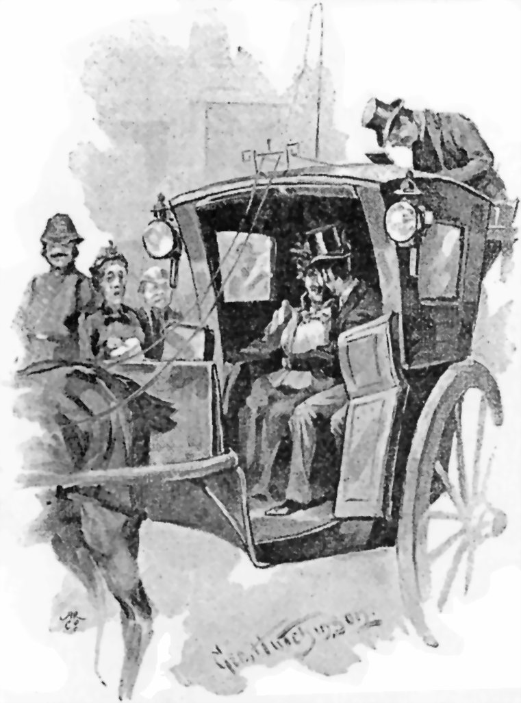
"SHE NESTLED AGAINST HIM."
{kind=link}
A shudder traversed her frame. "Not with that man, Peters!" she murmured.
"Not with that man, Peters!" he echoed sharply. "What is the matter with Peters?"
"I don't know," she said. "I don't like him."
"Clara," he said, half sternly, half cajolingly, "I thought you were above these feminine weaknesses; you are punctual, strive also to be reasonable. Tom is my best friend. From boyhood we have been always together. There is nothing Tom would not do for me, or I for Tom. You must like him, Clara; you must, if only for my sake."
"I'll try," Clara promised, and then he kissed her in gratitude and broad daylight.
"You'll be very nice to him at tea, won't you?" he said anxiously. "I shouldn't like you two to be bad friends."
"I don't want to be bad friends," Clara protested; "only the moment I saw him a strange repulsion and mistrust came over me."
"You are quite wrong about him—quite wrong," he assured her earnestly. "When you know him better, you'll find him the best of fellows. Oh, I know," he said suddenly, "I suppose he was very untidy, and you women go so much by appearances!"
"Not at all," Clara retorted. "'Tis you men who go by appearances."
"Yes, you do. That's why you care for me," he said, smiling.
She assured him it wasn't, and she didn't care for him so much as he plumed himself, but he smiled on. His smile died away, however, when he entered his rooms and found Tom nowhere.
"I daresay you've made him run about hunting for me," he grumbled.
"Perhaps he knew I'd come back, and went away to leave us together," she answered. "He said he would when you came."
"And yet you say you don't like him!"
She smiled reassuringly. Inwardly, however, she felt pleased at the man's absence.
CHAPTER III.
POLLY RECEIVES A PROPOSAL.
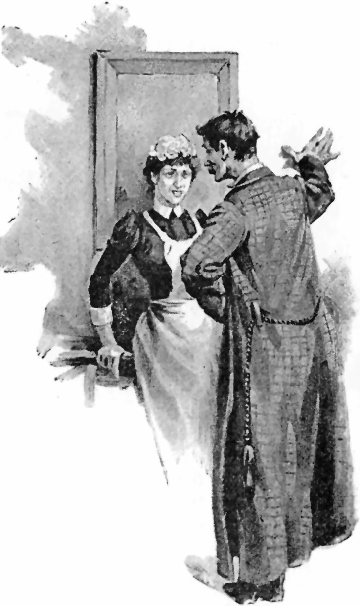
"CARRYING ON WITH POLLY."
{kind=link}
If Clara Newell could have seen Tom Peters carrying on with Polly in the passage, she might have felt justified in her prejudice against him. It must be confessed, though, that Everard also carried on with Polly. Alas! it is to be feared that men are much of a muchness where women are concerned; shabby men and smart men, bank managers and journalists, bachelors and semi-detached bachelors. Perhaps it was a mistake after all to say the chums had nothing patently in common. Everard, I am afraid, kissed Polly rather more often than Clara, and although it was because he respected her less, the reason would perhaps not have been sufficiently consoling to his affianced wife. For Polly was pretty, especially on alternate Sunday afternoons, and when at ten p.m. she returned from her outings, she was generally met in the passage by one or other of the men. Polly liked to receive the homage of real gentlemen, and set her white cap at all indifferently. Thus, just before Clara knocked on that memorable Sunday afternoon, Polly, being confined to the house by the unwritten code regulating the lives of servants, was amusing herself by flirting with Peters.
"You are fond of me a little bit," the graceless Tom whispered, "aren't you?"
"You know I am, sir," Polly replied.
"You don't care for anyone else in the house?"
"Oh no, sir, and never let anyone kiss me but you. I wonder how it is, sir?" Polly replied ingenuously.
"Give me another," Tom answered.
She gave him another, and tripped to the door to answer Clara's knock.
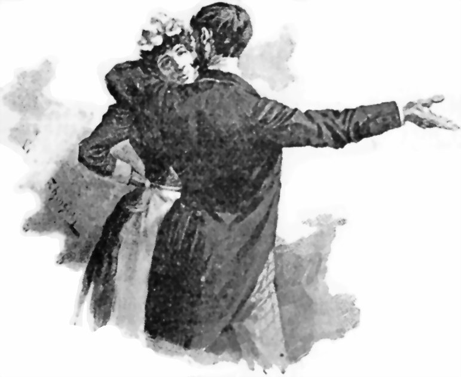
POLLY AND ROXDAL.
{kind=link}
And that very evening, when Clara was gone and Tom still out, Polly turned without the faintest atom of scrupulosity, or even jealousy, to the more fascinating Roxdal, and accepted his amorous advances. If it would seem at first sight that Everard had less excuse for such frivolity than his friend, perhaps the seriousness he showed in this interview may throw a different light upon the complex character of the man.
"You're quite sure you don't care for anyone but me?" he asked earnestly.
"Of course not, sir!" Polly replied indignantly. "How could I?"
"But you care for that soldier I saw you out with last Sunday?"
"Oh no, sir, he's only my young man," she said apologetically.
"Would you give him up?" he hissed suddenly.
Polly's pretty face took a look of terror. "I couldn't, sir! He'd kill me. He's such a jealous brute, you've no idea."
"Yes, but suppose I took you away from here?" he whispered eagerly. "Somewhere where he couldn't find you—South America, Africa, somewhere thousands of miles across the seas."
"Oh, sir, you frighten me!" whispered Polly, cowering before his ardent eyes, which shone in the dimly-lit passage.
"Would you come with me?" he hissed. She did not answer; she shook herself free and ran into the kitchen, trembling with a vague fear.
CHAPTER IV.
THE CRASH.
One morning, earlier than his earliest hour of demanding his shaving water, Tom rang the bell violently and asked the alarmed Polly what had become of Mr. Roxdal.
"How should I know, sir?" she gasped. "Ain't he been in, sir?"
"Apparently not," Tom answered anxiously. "He never remains out. We have been here three weeks now, and I can't recall a single night he hasn't been home before twelve. I can't make it out." All enquiries proved futile. Mrs. Seacon reminded him of the thick fog that had come on suddenly the night before.
"What fog?" asked Tom.
"Lord! didn't you notice it, sir?"
"No, I came in early, smoked, read, and went to bed about eleven. I never thought of looking out of the window."
"It began about ten," said Mrs. Seacon, "and got thicker and thicker. I couldn't see the lights of the river from my bedroom. The poor gentleman has been and gone and walked into the water." She began to whimper.
"Nonsense, nonsense," said Tom, though his expression belied his words. "At the worst I should think he couldn't find his way home, and couldn't get a cab, so put up for the night at some hotel. I daresay it will be all right." He began to whistle as if in restored cheerfulness. At eight o'clock there came a letter for Roxdal, marked "immediate," but as he did not turn up for breakfast, Tom went round personally to the City and Suburban Bank. He waited half-an-hour there, but the manager did not make his appearance. Then he left the letter with the cashier and went away with anxious countenance.

"SCOTLAND YARD OPENED THE LETTER."
That afternoon it was all over London that the manager of the City and Suburban had disappeared, and that many thousand pounds of gold and notes had disappeared with him.
Scotland Yard opened the letter marked "immediate," and noted that there had been a delay in its delivery, for the address had been obscure, and an official alteration had been made. It was written in a feminine hand and said: "On second thoughts I cannot accompany you. Do not try to see me again. Forget me. I shall never forget you."
There was no signature.
Clara Newell, distracted, disclaimed all knowledge of this letter. Polly deposed that the fugitive had proposed flight to her, and the routes to Africa and South America were especially watched. Some months passed without result. Tom Peters went about overwhelmed with grief and astonishment. The police took possession of all the missing man's effects. Gradually the hue and cry dwindled, died.
CHAPTER V.
FAITH AND UNFAITH.
"At last we meet!" cried Tom Peters, while his face lit up in joy. "How are you, dear Miss Newell?" Clara greeted him coldly. Her face had an abiding pallor now. Her lover's flight and shame had prostrated her for weeks. Her soul was the arena of contending instincts. Alone of all the world she still believed in Everard's innocence, felt that there was something more than met the eye, divined some devilish mystery behind it all. And yet that damning letter from the anonymous lady shook her sadly. Then, too, there was the deposition of Polly. When she heard Peters's voice accosting her all her old repugnance resurged. It flashed upon her that this man—Roxdal's boon companion—must know far more than he had told to the police. She remembered how Everard had spoken of him, with what affection and confidence! Was it likely he was utterly ignorant of Everard's movements? Mastering her repugnance, she held out her hand. It might be well to keep in touch with him; he was possibly the clue to the mystery. She noticed he was dressed a shade more trimly, and was smoking a meerschaum. He walked along at her side, making no offer to put his pipe out.
"You have not heard from Everard?" he asked. She flushed. "Do you think I'm an accessory after the fact?" she cried.
"No, no," he said soothingly. "Pardon me, I was thinking he might have written—giving no exact address, of course. Men do sometimes dare to write thus to women. But, of course, he knows you too well—you would have put the police on his track."
"Certainly," she exclaimed, indignantly. "Even if he is innocent he must face the charge."
"Do you still entertain the possibility of his innocence?"
"I do," she said boldly, and looked him full in the face. His eyelids drooped with a quiver. "Don't you?"
"I have hoped against hope," he replied, in a voice faltering with emotion. "Poor old Everard! But I am afraid there is no room for doubt. Oh, this wicked curse of money—tempting the noblest and the best of us."
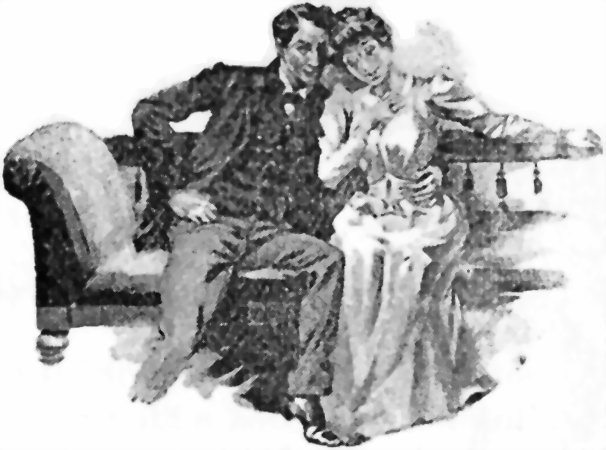
"SHE DID NOT REPULSE HIM."
{kind=link}
The weeks rolled on. Gradually she found herself seeing more and more of Tom Peters, and gradually, strange to say, he grew less repulsive. From the talks they had together, she began to see that there was really no reason to put faith in Everard; his criminality, his faithlessness, were too flagrant. Gradually she grew ashamed of her early mistrust of Peters; remorse bred esteem, and esteem ultimately ripened into feelings so warm, that when Tom gave freer vent to the love that had been visible to Clara from the first, she did not repulse him.
It is only in books that love lives for ever. Clara, so her father thought, showed herself a sensible girl in plucking out an unworthy affection and casting it from her heart. He invited the new lover to his house, and took to him at once. Roxdal's somewhat supercilious manner had always jarred upon the unsophisticated corn merchant. With Tom the old man got on much better. While evidently quite as well informed and cultured as his whilom friend, Tom knew how to impart his superior knowledge with the accent on the knowledge rather than on the superiority, while he had the air of gaining much information in return. Those who are most conscious of defects of early education are most resentful of other people sharing their consciousness Moreover, Tom's bonhomie was far more to the old fellow's liking than the studied politeness of his predecessor, so that on the whole Tom made more of a conquest of the father than of the daughter. Nevertheless, Clara was by no means unresponsive to Tom's affection, and when, after one of his visits to the house, the old man kissed her fondly and spoke of the happy turn things had taken, and how, for the second time in their lives, things had mended when they seemed at their blackest, her heart swelled with a gush of gratitude and joy and tenderness, and she fell sobbing into her father's arms.
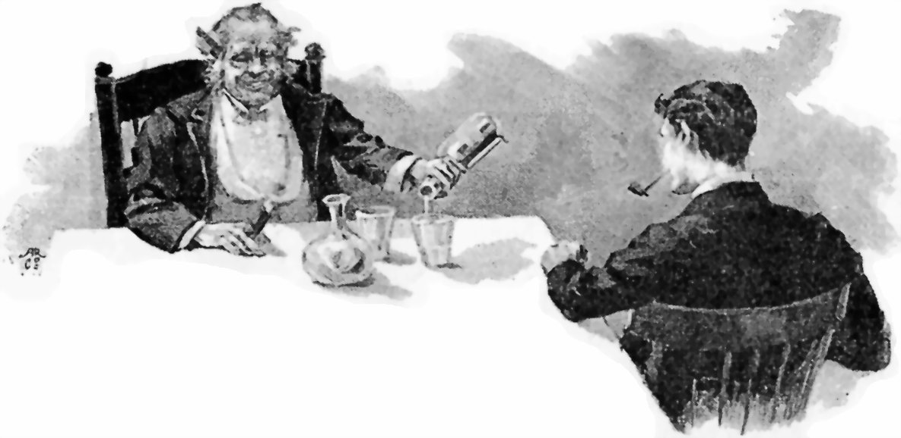
"WITH TOM THE OLD MAN GOT ON MUCH BETTER."
{kind=link}
Tom calculated that he made a clear five hundred a year by occasional journalism, besides possessing some profitable investments which he had inherited from his mother, so that there was no reason for delaying the marriage. It was fixed for May-day, and the honeymoon was to be spent in Italy.
CHAPTER VI
THE DREAM AND THE AWAKENING
But Clara was not destined to happiness. From the moment she had promised herself to her first love's friend old memories began to rise up and reproach her. Strange thoughts stirred in the depths of her soul, and in the silent watches of the night she seemed to hear Everard's accents, charged with grief and upbraiding. Her uneasiness increased as her wedding-day drew near. One night, after a pleasant afternoon spent in being rowed by Tom among the upper reaches of the Thames, she retired to rest full of vague forebodings. And she dreamt a terrible dream. The dripping form of Everard stood by her bedside, staring at her with ghastly eyes. Had he been drowned on the passage to his land of exile? Frozen with horror, she put the question.
"I have never left England!" the vision answered.
Her tongue clove to the roof of her mouth.
"Never left England?" she repeated, in tones which did not seem to be hers.
The wraith's stony eyes stared on, but there was silence.
"Where have you been then?" she asked in her dream.
"Very near you," came the answer.
"There has been foul play then!" she shrieked.
The phantom shook its head in doleful assent.
"I knew it!" she shrieked. "Tom Peters—Tom Peters has done away with you. Is it not he? Speak!"
"Yes, it is he—Tom Peters—whom I loved more than all the world."
Even in the terrible oppression of the dream she could not resist saying, woman-like:
"Did I not warn you against him?"
The phantom stared on silently and made no reply.
"But what was his motive?" she asked at length.
"Love of gold—and you. And you are giving yourself to him," it said sternly.
"No, no, Everard! I will not! I will not! I swear it! Forgive me!"
The spirit shook its head sceptically.
"You love him. Women are false—as false as men."
She strove to protest again, but her tongue refused its office.
"If you marry him, I shall always be with you! Beware!"
The dripping figure vanished as suddenly as it came, and Clara awoke in a cold perspiration. Oh, it was horrible! The man she had learnt to love, the murderer of the man she had learnt to forget! How her original prejudice had been justified! Distracted, shaken to her depths, she would not take counsel even of her father, but informed the police of her suspicions. A raid was made on Tom's rooms, and lo! the stolen notes were discovered in a huge bundle. It was found that he had several banking accounts, with a large, recently-paid amount in each bank. Tom was arrested. Attention was now concentrated on the corpses washed up by the river. It was not long before the body of Roxdal came to shore, the face distorted almost beyond recognition by long immersion, but the clothes patently his, and a pocket-book in the breast-pocket removing the last doubt. Mrs. Seacon and Polly and Clara Newell all identified the body. Both juries returned a verdict of murder against Tom Peters, the recital of Clara's dream producing a unique impression in the court and throughout the country. The theory of the prosecution was that Roxdal had brought home the money, whether to fly alone or to divide it, or whether even for some innocent purpose, as Clara believed, was immaterial. That Peters determined to have it all, that he had gone out for a walk with the deceased, and, taking advantage of the fog, had pushed him into the river, and that he was further impelled to the crime by love for Clara Newell, as was evident from his subsequent relations with her. The judge put on the black cap. Tom Peters was duly hung by the neck till he was dead.
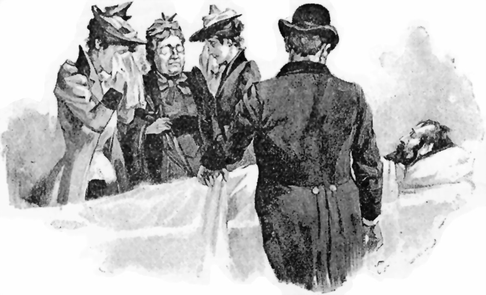
"IDENTIFIED THE BODY."
{kind=link}
CHAPTER VII.
BRIEF RÉSUMÉ OF THE CULPRIT'S CONFESSION.
When you all read this I shall be dead and laughing at you. I have been hung for my own murder. I am Everard G. Roxdal. I am also Tom Peters. We two were one. When I was a young man my moustache and beard wouldn't come. I bought false ones to improve my appearance. One day, after I had become manager of the City and Suburban Bank, I took off my beard and moustache at home, and then the thought crossed my mind that nobody would know me without them. I was another man. Instantly it flashed upon me that if I ran away from the Bank, that other man could be left in London, while the police were scouring the world for a non-existent fugitive. But this was only the crude germ of the idea. Slowly I matured my plan. The man who was going to be left in London must be known to a circle of acquaintance beforehand. It would be easy enough to masquerade in the evenings in my beardless condition, with other disguises of dress and voice. But this was not brilliant enough. I conceived the idea of living with him. It was Box and Cox reversed. We shared rooms at Mrs. Seacon's. It was a great strain, but it was only for a few weeks. I had trick clothes in my bedroom like those of quick-change artistes; in a moment I could pass from Roxdal to Peters and from Peters to Roxdal. Polly had to clean two pairs of boots a morning, cook two dinners, &c., &c. She and Mrs. Seacon saw one or the other of us every moment; it never dawned upon them they never saw us both together. At meals I would not be interrupted, ate off two plates, and conversed with my friend in loud tones. At other times we dined at different hours. On Sundays he was supposed to be asleep when I was in church. There is no landlady in the world to whom the idea would have occurred that one man was troubling himself to be two (and to pay for two, including washing). I worked up the idea of Roxdal's flight, asked Polly to go with me, manufactured that feminine letter that arrived on the morning of my disappearance. As Tom Peters I mixed with a journalistic set. I had another room where I kept the gold and notes till I mistakenly thought the thing had blown over. Unfortunately, returning from here on the night of my disappearance, with Roxdal's clothes in a bundle I intended to drop into the river, it was stolen from me in the fog, and the man into whose possession it ultimately came appears to have committed suicide. What, perhaps, ruined me was my desire to keep Clara's love, and to transfer it to the survivor. Everard told her I was the best of fellows. Once married to her, I would not have had much fear. Even if she had discovered the trick, a wife cannot give evidence against her husband, and often does not want to. I made none of the usual slips, but no man can guard against a girl's nightmare after a day up the river and a supper at the Star and Garter. I might have told the judge he was an ass, but then I should have had penal servitude for bank robbery, and that is worse than death. The only thing that puzzles me, though, is whether the law has committed murder or I suicide.
{kind=link}